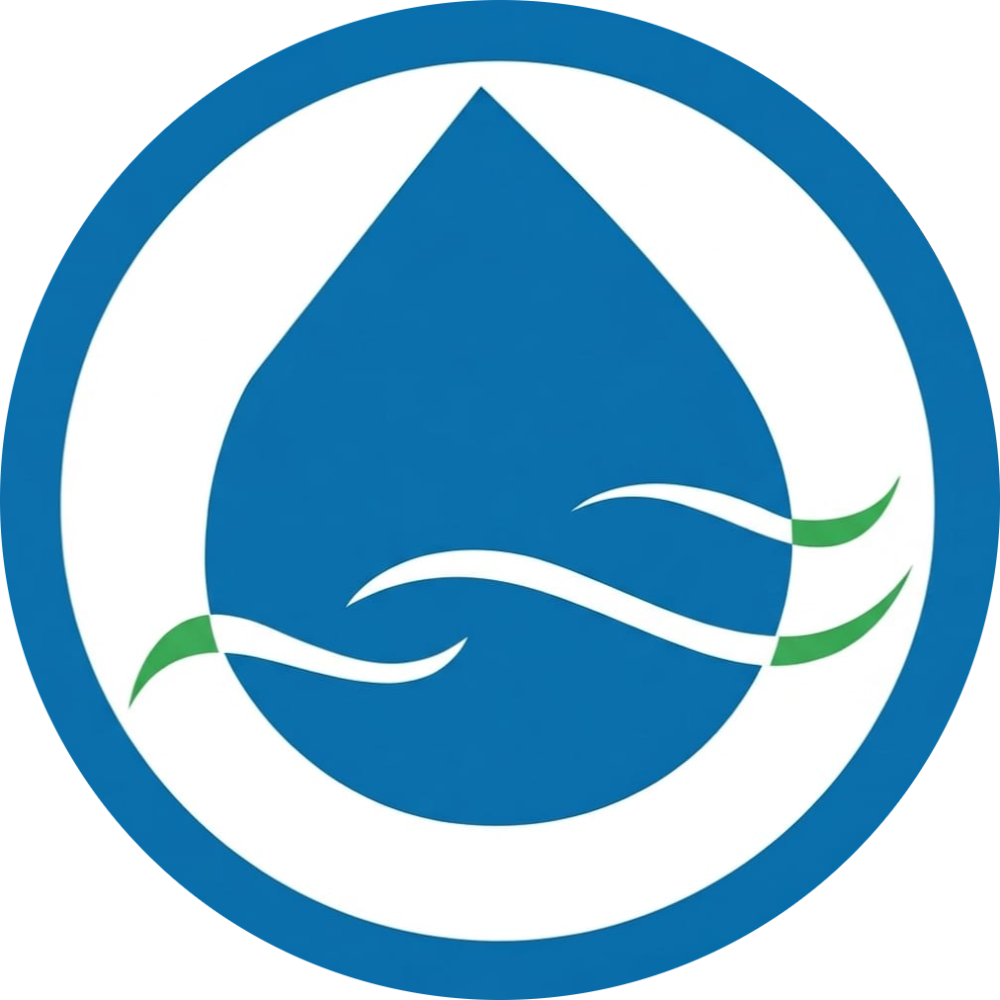
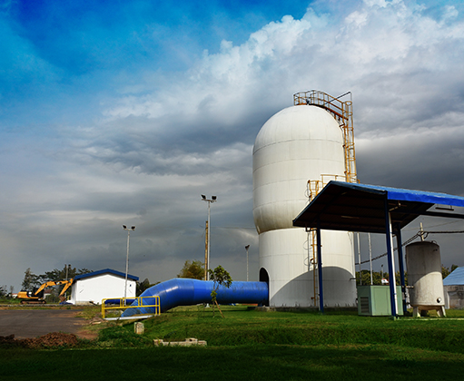
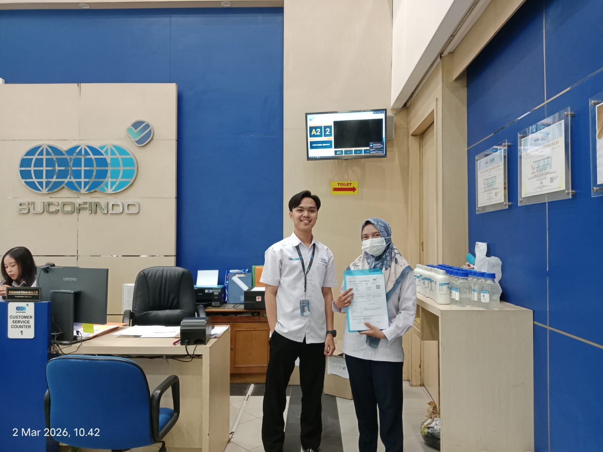
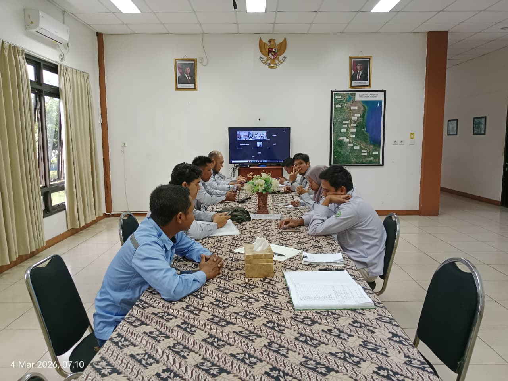
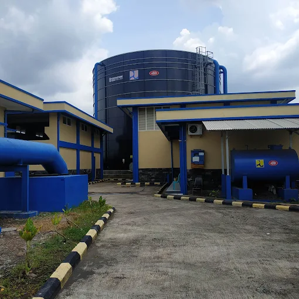
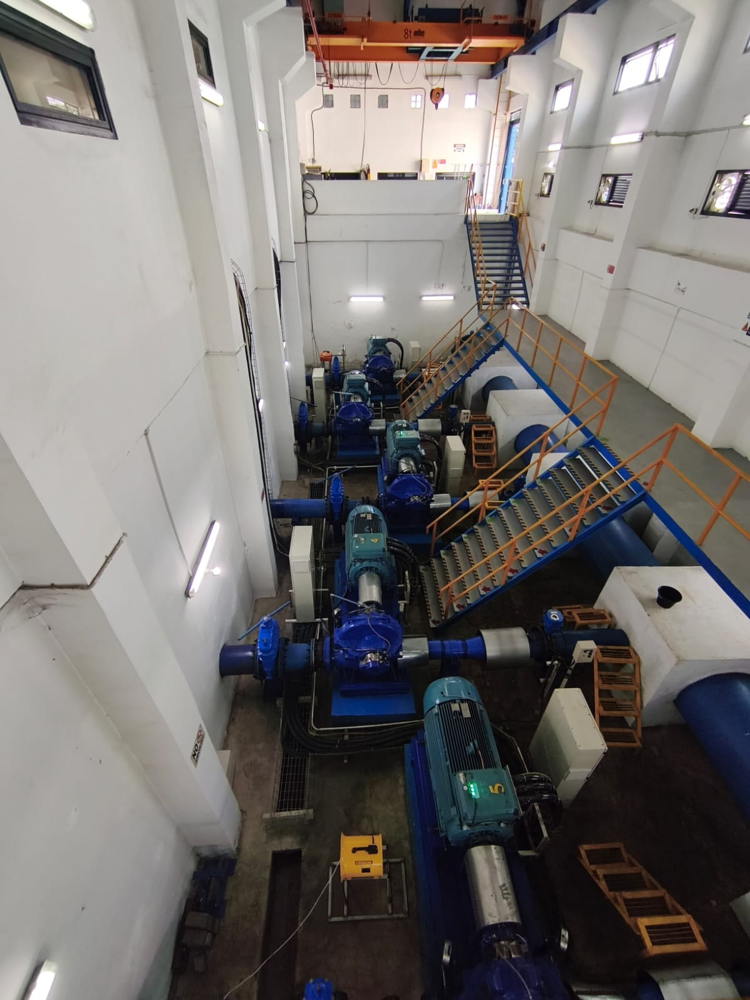

PT. Meta Adhya Tirta Umbulan mengalirkan air minum curah berkualitas tinggi melalui pipa transmisi baja sepanjang 97 KM, melintasi 18 titik Rumah Meter dari mata air Umbulan (Pasuruan) hingga Kabupaten Gresik.

Kapasitas Desain Transmisi
Jalur Transmisi Hulu ke Hilir
Checkpoint Offtake Distribusi
5 Kab/Kota di Jawa Timur
Air bersih mengalir dari mata air Umbulan (Pasuruan) menuju titik hilir terjauh di Giri (Gresik). Gulir layar (scroll) atau klik tombol Alirkan Otomatis untuk menelusuri aliran air sepanjang 97 kilometer.
Mata Air Umbulan (Hulu Transmisi)
Kapasitas Sumber Alami • Kab. Pasuruan (Elevasi 33 mdpl)
Titik offtake pertama pasca intake sumber Umbulan untuk PDAM Pasuruan.
Penyaluran air curah untuk wilayah Pasuruan barat dan pemukiman sekitar.
Stasiun meter perkotaan untuk jaringan pipa distribusi air minum lokal.
Pasokan air minum terpadu untuk kawasan industri strategis PIER Pasuruan.
Titik transmisi utama ibukota kabupaten menuju koridor barat Pasuruan.
Titik perbatasan akhir Pasuruan sebelum pipa memasuki wilayah Sidoarjo.
Gerbang transmisi masuk Sidoarjo untuk koordinasi PDAB Jawa Timur.
Distribusi air curah skala besar ke instalasi pengolahan PDAM Delta Tirta.
Penyaluran air bersih untuk kawasan pemukiman & sentra UKM Tanggulangin.
Stasiun pemantauan debit aliran untuk jaringan distribusi Sidoarjo selatan.
Titik offtake utama melayani pusat perkotaan dan fasilitas umum Sidoarjo.
Suplai air minum untuk kawasan industri dan perumahan Buduran.
Zona kepadatan penduduk tinggi penyangga mobilitas Sidoarjo - Surabaya.
Checkpoint batas kabupaten sebelum pipa transmisi melintasi Kota Surabaya.
Pintu masuk suplai air curah Umbulan untuk PDAM Surya Sembada Surabaya.
Distribusi air minum untuk pengembangan wilayah perumahan Surabaya barat.
Koridor transmisi akhir Surabaya sebelum menyeberang ke perbatasan Gresik.
Titik hilir terjauh pipa transmisi 97 KM melayani kebutuhan PDAM Gresik.
Titik Akhir Penyaluran Air Bersih • Kabupaten Gresik


SPAM Umbulan diresmikan pada 22 Maret 2021 sebagai Proyek Strategis Nasional berbasis Kerjasama Pemerintah dengan Badan Usaha (KPBU). Dengan skema Build-Operate-Transfer (BOT) masa konsesi 25 tahun 9 bulan, proyek ini menyalurkan air minum curah dari sumber air Umbulan hingga 310.000 sambungan rumah.
Dikelola selama 25 tahun 9 bulan sebelum diserahterimakan kembali ke pemerintah.
Memenuhi pasokan air bersih bagi masyarakat di 5 Kabupaten/Kota Jatim.
Air minum disalurkan melalui jalur transmisi sepanjang 97 km ke PDAM di 5 wilayah Jawa Timur.
Penyaluran air minum tahap awal langsung dari titik intake sumber Umbulan untuk kebutuhan PDAM lokal dan kawasan PIER.

RM 07 – RM 17 (38,4 – 87,3 KM)Suplai air curah kapasitas besar melalui 11 titik offtake guna mendukung pemukiman perkotaan dan kawasan industri.

RM 18 • Reservoir Giri (97,0 KM)Titik distribusi hilir terjauh yang didorong via stasiun pompa booster menuju Reservoir Giri untuk pemenuhan air bersih pesisir.